Python
Template Matching Script Test
The goal is to have a method
for matching group functional networks to the most similar individual
network, represented by sharing the most overlap in activation, and
lack of activation.
To test the accuracy of this method, I have done the following:
1) Completed individual ICA
runs for the NYU10 set, to be matched with group
networks from the same group.
2) Tested two methods (1,2)
to match individual networks to group networks
3) Created results report script to visualize results
4) Would like to talk about two
methods, and best way to create a "gold standard" to evaluate script
performance and methods.
Group Functional Networks
1
2
3


 4
5
6
4
5
6


 7
8
9
7
8
9
 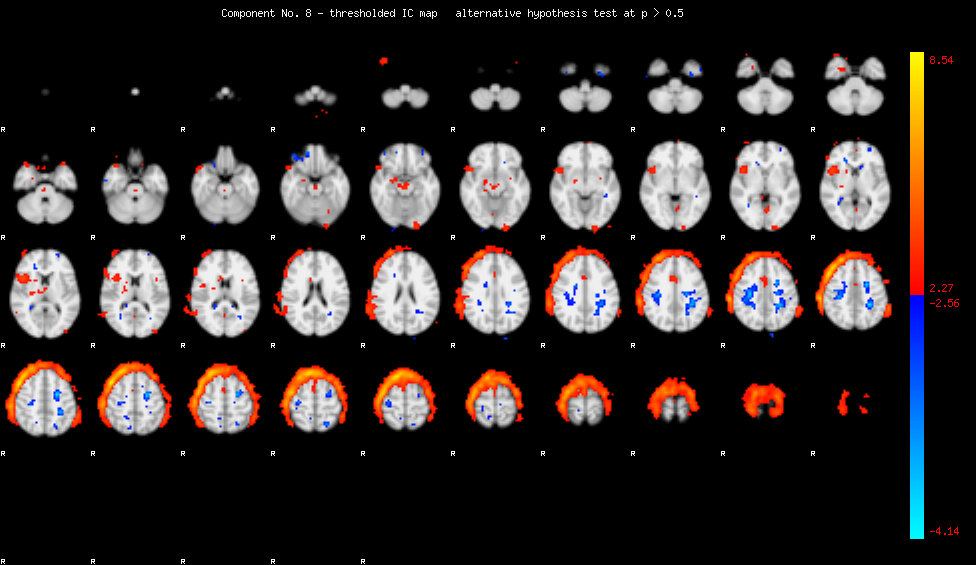
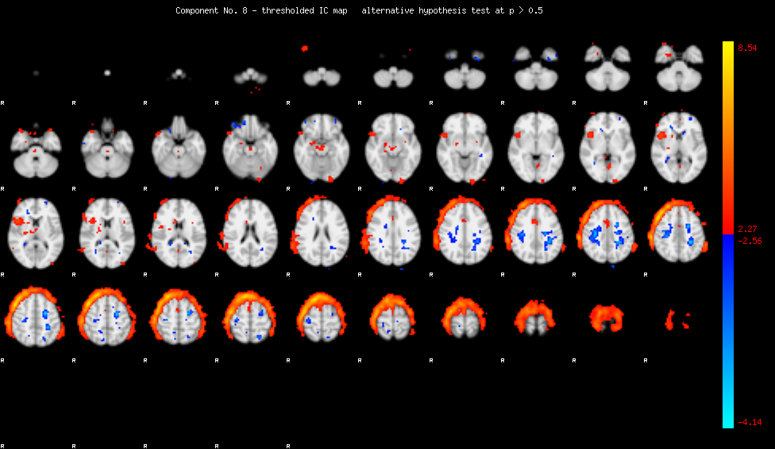 10
11
12
10
11
12

 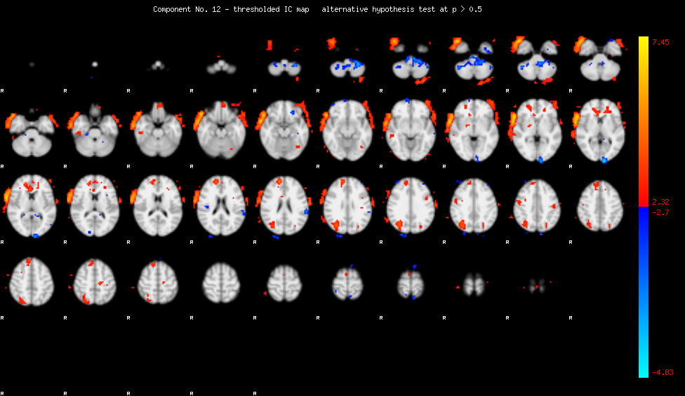
13
14
15
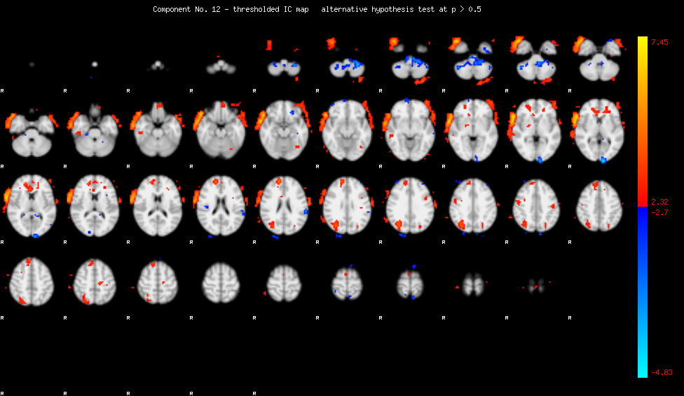
13
14
15
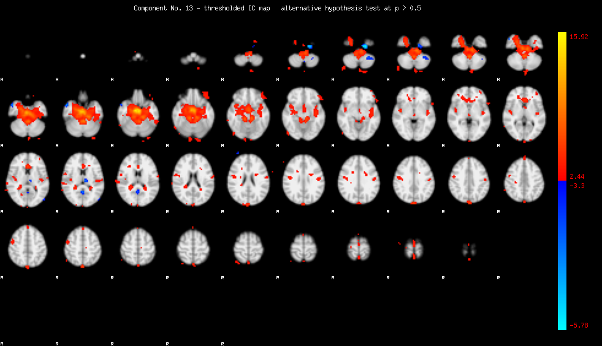 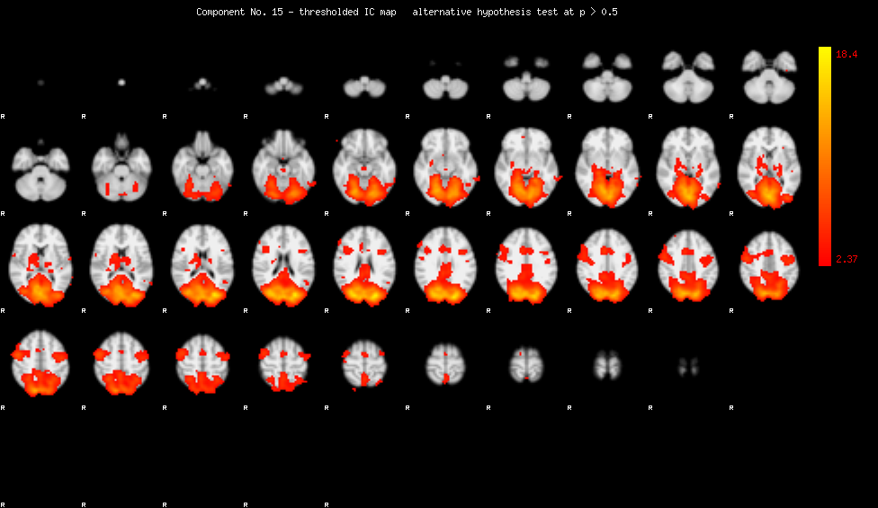
16
17
18
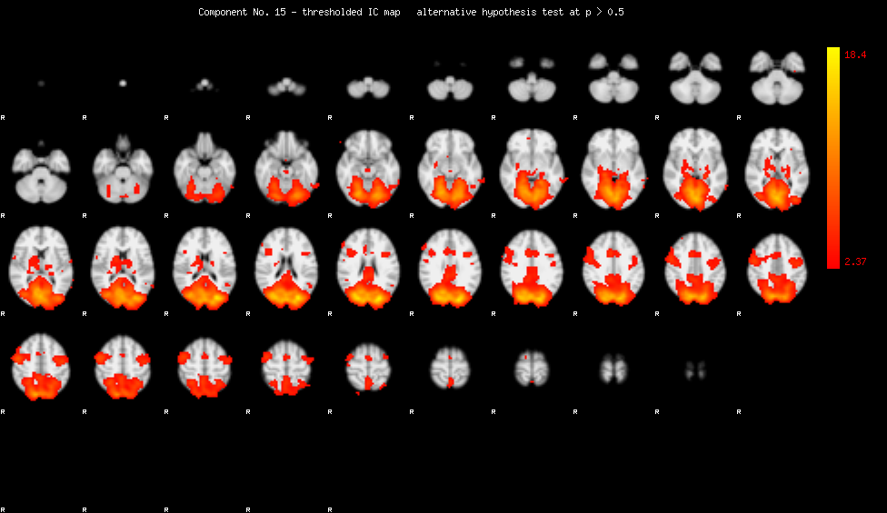
16
17
18
 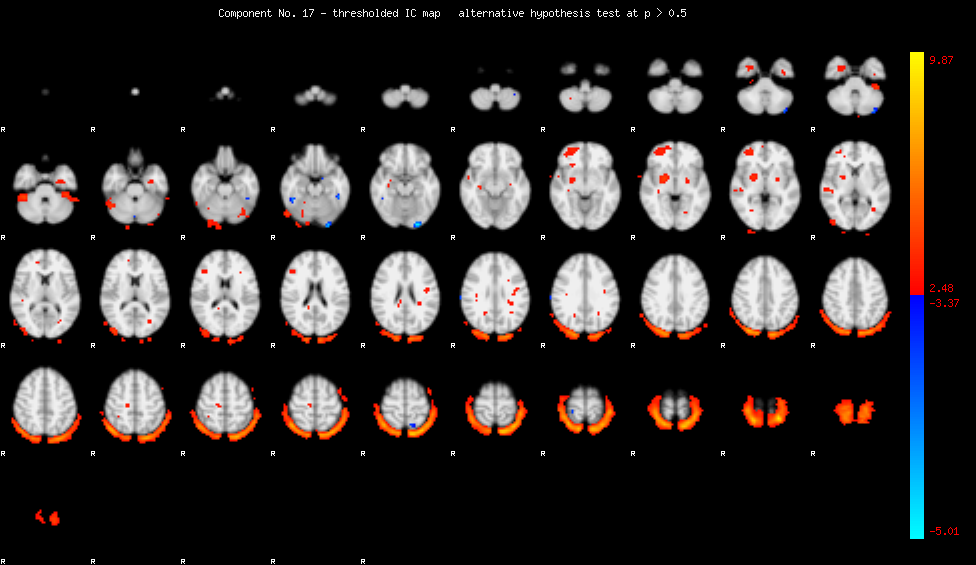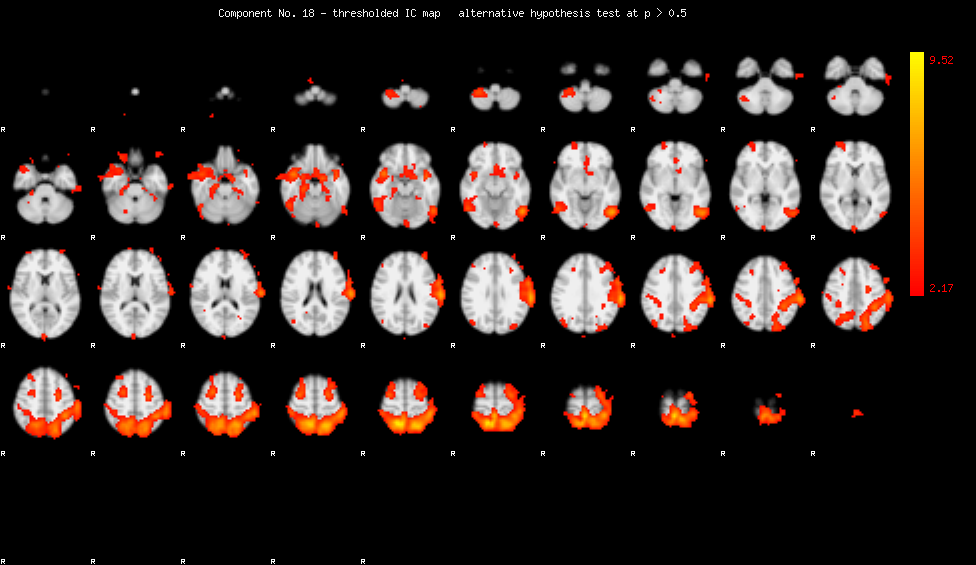
19
20
21
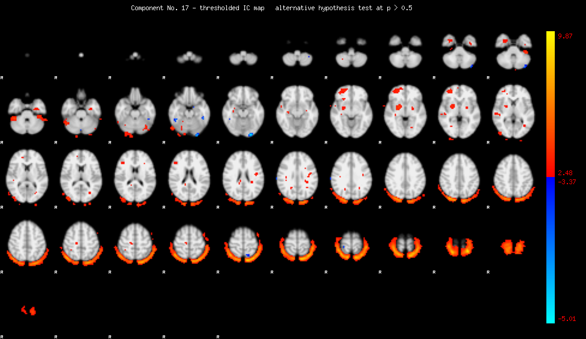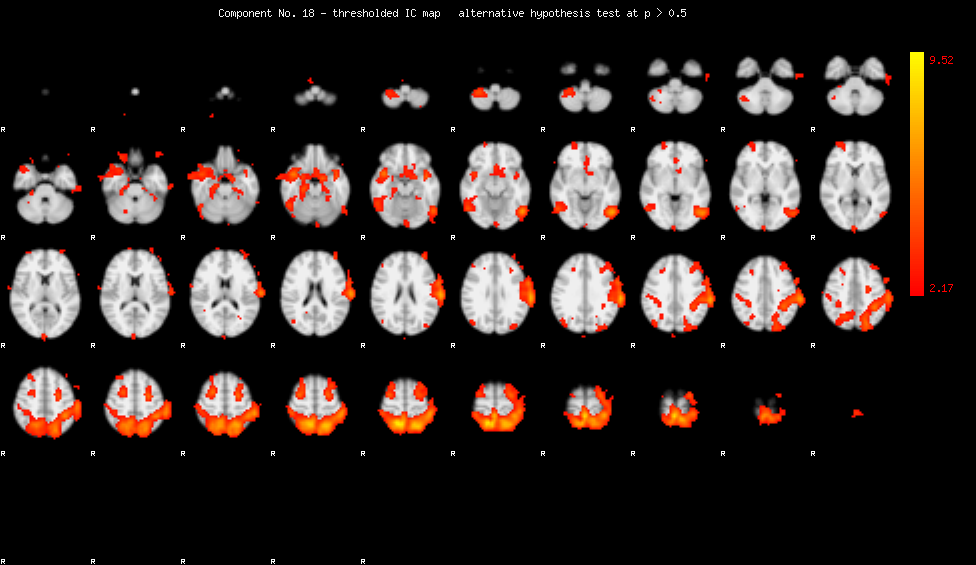
19
20
21

 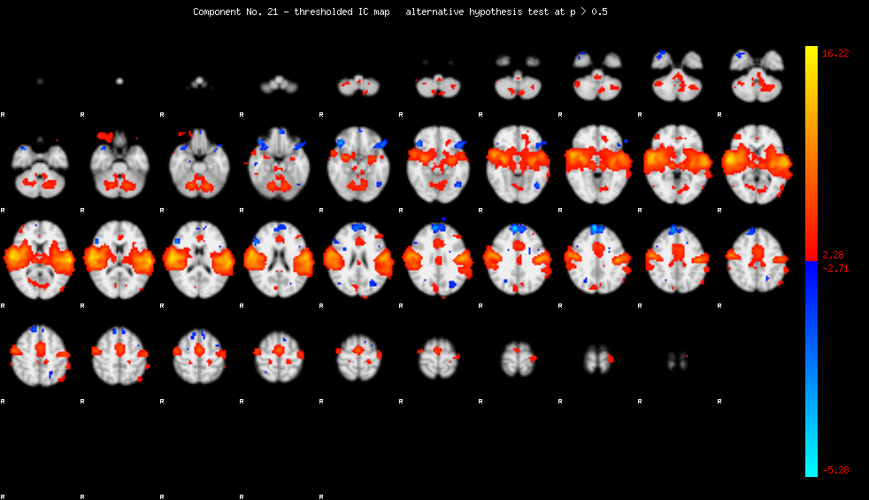
22
23
24
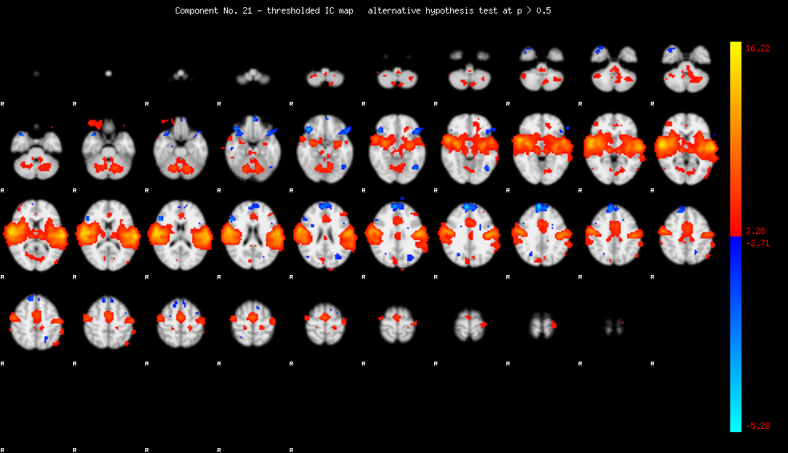
22
23
24
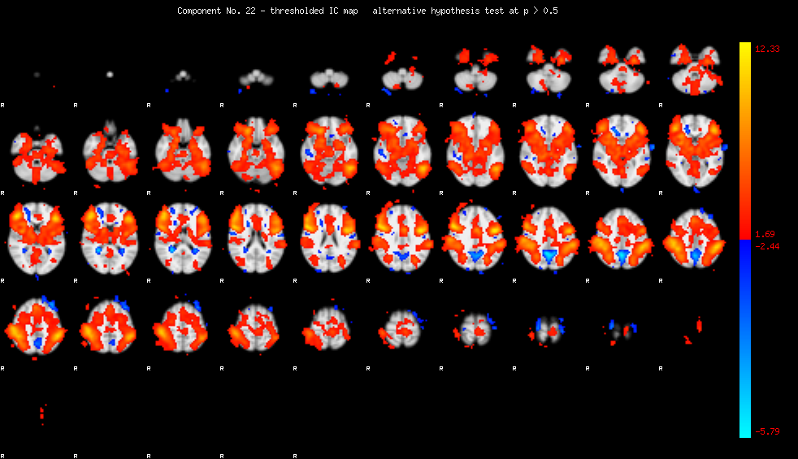 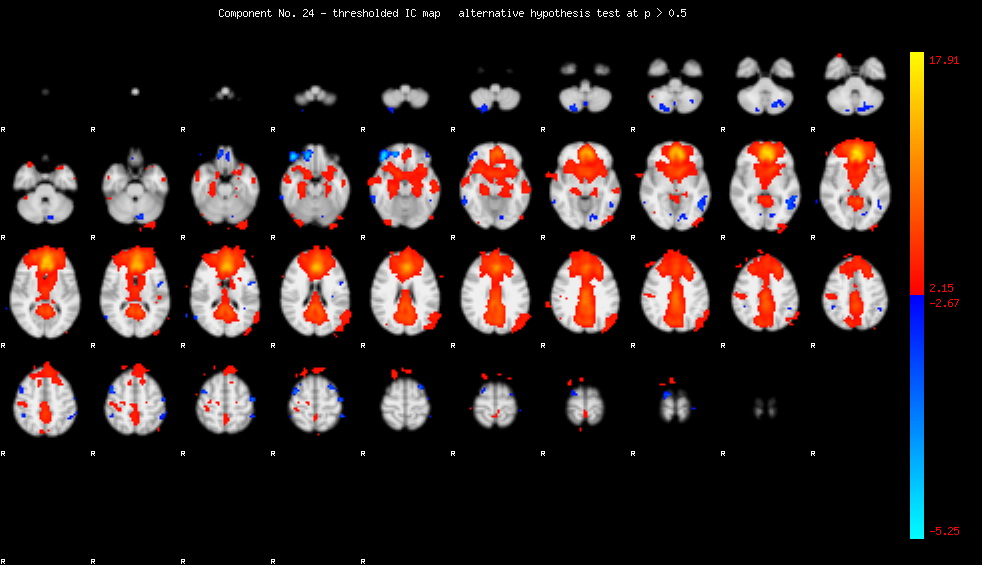
25
26
27
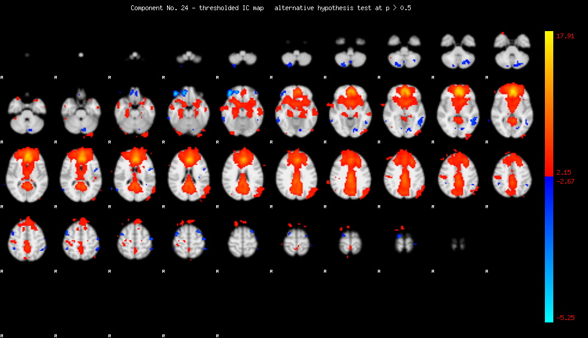
25
26
27

 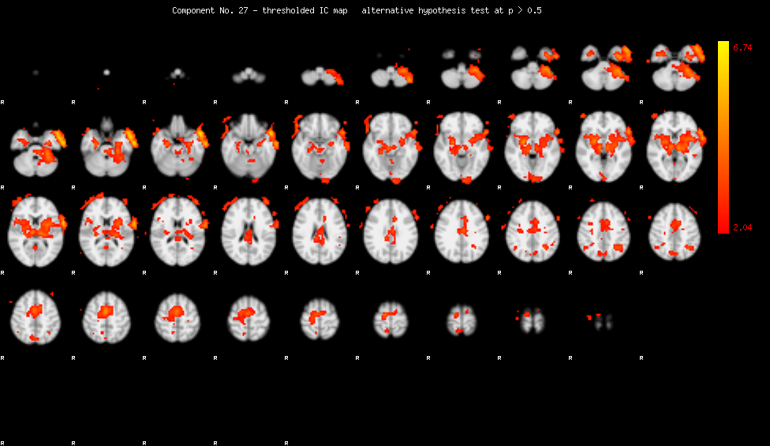
28
29
30
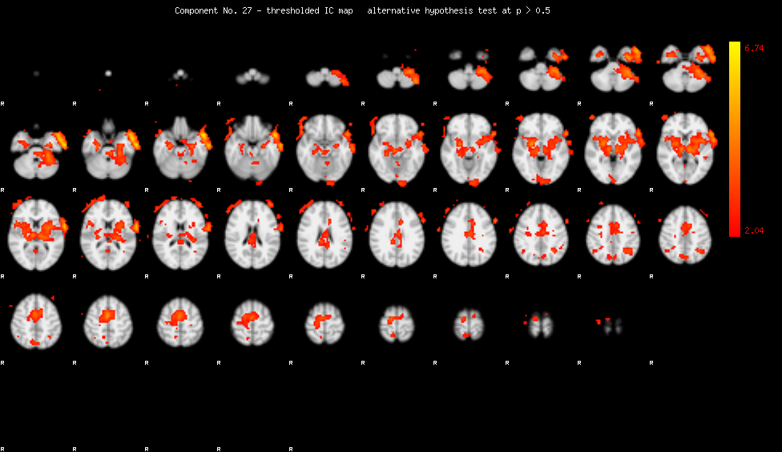
28
29
30


Results Reports
Method 1
1) Identify voxels in template
2) Convert to MNI coordinates
3) Look for activation in these voxels of each component to match. When we find one:
- add 1 to voxel_in_roi count
- take absolute value of activation, add to activation_in_roi
4) Set these voxels = 0 and look for remaining activation (activation
in component image outside of template) . When we find one:
- add 1 to voxel_out_roi count
- take absolute value of activation, add to activation_out_roi
5) Subtract average activation per voxel outside of template from average activation per voxel inside template.
6) Rank these scores in descending order to get best --> worst matches
ICA: 1 2 3 4
5
6
7 8
9
10
11 12
13 14 15 16 17 18 19 20 21 22 23 24 25 26 27 28 29 30
Method 2
1) Identify voxels in template
2) Convert to MNI coordinates
3) Look for activation in these voxels of each component to match. When we find one:
- add 1 to voxel_in_roi count
- Add activation to activation_in_roi
4) Set these voxels = 0 and look for remaining activation (activation
in component image outside of template) . When we find one:
- add 1 to voxel_out_roi count
- Add activation to activation_out_roi
5) Subtract average avtivation per voxel outside of template from average activation per voxel inside template.
6) Take absolute value of this difference to get ranking score, in descending order is best --> worst matches
ICA: 1 2 3 4
5
6
7 8
9
10
11 12
13 14 15 16 17 18 19 20 21 22 23 24 25 26 27 28 29 30
** Note that there are
30 components for the group map, and only 25 for each individual, which
was a mistake on my part. I am not sure if this will influence
the matching.